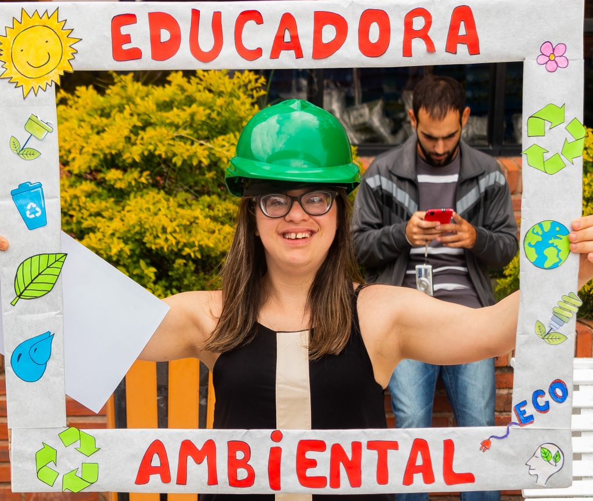

Greenpeace es una organización ecologista internacional, independiente política y económicamente, para la defensa del medio ambiente y de la paz.
Desde su fundación en 1971, trabaja en diferentes países del planeta en campañas internacionales cuyo objetivo es conseguir un mundo más limpio, más justo y ecológicamente sostenible.
Aunque las acciones directas no violentas son los aspectos más conocidos de la labor de Greenpeace, detrás de ellas existe siempre un trabajo de investigación, información pública y presión política. Estas actividades de las campañas de Greenpeace se orientan en dos sentidos fundamentales: la denuncia y la propuesta de soluciones para los grandes problemas que hoy tenemos planteados a nivel medioambiental.
La Sea Shepherd Conservation Society es una organización ecologista internacional sin ánimo de lucro (ONG) por la conservación de la fauna marina, cuya misión es acabar con la destrucción del hábitat y la matanza de la fauna en los océanos del mundo con el fin de proteger y conservar el ecosistema y las especies. Sus campañas se rigen por la Carta Mundial de las Naciones Unidas para la Naturaleza (1982) y otras leyes que protegen a las especies marinas y sus entornos.
La sociedad fue fundada en 1977 por Paul Watson, uno de los primeros miembros de Greenpeace, después de una disputa con la organización sobre el cómo actuar en la cacería de ballenas.Greenpeace evita interferir con la caza de ballenas, buscando crear conciencia a través de la captura de testimonios gráficos. En contraste, Sea Shepherd se dedica a la acción directa, que implica interferir con las operaciones de buques balleneros.
Cascos Verdes se trata de una asociación civil sin fines de lucro que trabaja desde el año 2007 por la inclusión a traves de la educación ambiental. El objetivo de esta organización consiste en que, por medio del programa de educación ambiental, las personas con discapacidad intelectual, puedan estudiar durante cuatro años en universidades de primer nivel para convertirse en Educadores Ambientales, tanto en modalidad presencial como virtual. En los últimos años de la cursada, los alumnos transmiten los conocimientos adquiridos en diferentes ámbitos de la sociedad civil como ser escuelas públicas y privadas, empresas, edificios públicos, eventos, entre otros. De este modo, Cascos Verdes le permite a las personas con discapacidad intelectual vivir una experiencia de superación personal, al mismo tiempo que los incluye en ámbitos a los que comúnmente no tienen acceso.
Banco de Bosques es una fundación que tiene como objetivos combatir el cambio climático, la extinción de las especies y generar empleo local por medio de la colaboración de todo aquel que quiera salvar un pedacito de tierra. Es un sistema que utiliza imágenes satelitales para generar un vínculo directo entre el donante y la «porción» concreta del bosque que cada donante salva. Se genera un espacio mediante el cual el negocio mayorista de compra de tierras con bosques pasa a ser también un negocio minorista. Un “almacén” de hectáreas de bosques en la que todos pueden participar aportando desde unos metros cuadrados hasta varias hectáreas de bosques que se salvan automáticamente. Este avance de hectáreas salvadas se puede seguir paso a paso en el sitio de Banco de Bosques y cada donante puede saber exactamente donde está ese “pedacito” de planeta que se salvó gracias a su aporte.